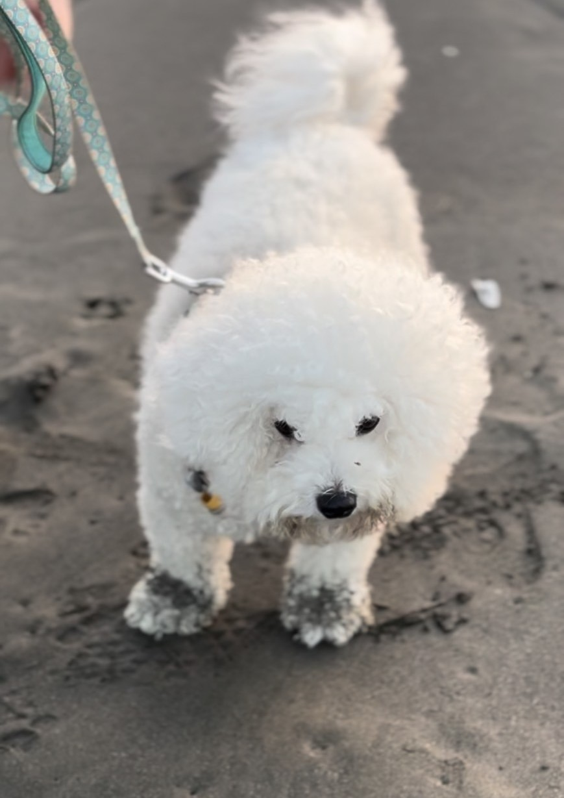
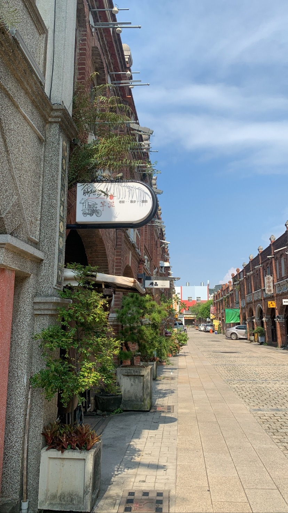

呂宗諳 LU TSUNG AN
新北市新店區北宜路段二157號
<
No. 2, Section 157, Beiyi Road, Xindian District, New Taipei City
(Tel)+886 0908756520
A111070209@mail.shu.edu.tw
我來自新北市，目前就讀於世新大學資訊傳播系二年級，我喜愛設計，也喜愛攝影，常常會把自己看到聽到的事物記錄起來，未來我也希望自己能從事這方面的工作。
I come from New Taipei City and I am currently a sophomore majoring in Information and Communication at Shih Hsin University. I have a passion for design and photography, capturing moments and things I see and hear. In the future, I hope to pursue a career in this field.
Skills
Programming Languages & Tools
Workflow
- 剪輯影片
- 電腦繪圖
- 程式設計
- 文書處理
<
興趣 Interests
我對繪畫、攝影和剪輯影片都有濃厚的興趣。透過繪畫，我能夠表達內心的情感和想法；攝影則讓我捕捉世界的美麗和獨特的時刻；剪輯則讓我用影像故事傳達情感。此外，我喜歡品嘗各種各樣的甜食，甜食帶給我愉悅和滿足。我也熱愛運動，透過運動保持身體健康並享受活力。這些興趣豐富了我的生活，讓我樂在其中，並不斷探索新的可能性。
隨手紀錄的生活 Photography
金色海岸

狗狗
夕陽下的雲
